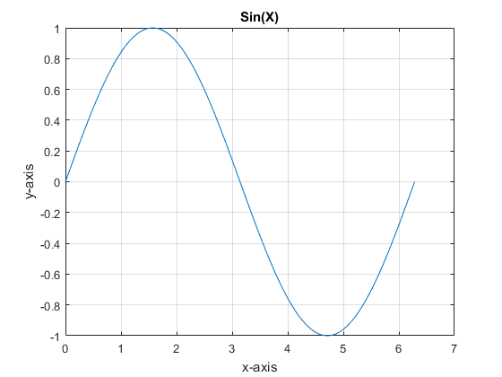

clear all
A =ones(5 ,7);
Rn = rank(A)
B =[5 1; 3 1];
EigV = eig(B)
C= [-5 1 ; -8 3];
D= [-6 2 ; 9 1];
E = C.*D
F =[-3 2 ; -1 0];
F9 = F^9
G =[1 -4; 1 -5];
inv_G = inv(G)
H = [1 2 7 3 ; 3 5 3 5 ;6 1 9 8 ];
row1 = H(1,:)
row2 = H(2,:)
row3 = H(3,:)
column2 = H(:,2)
I= [5 3 4 2];
J = [2 4 4 4 6 8];
common_elements = intersect(I, J)
K = randi(15 , 5)
L = [3 0 4 2 -1];
r = roots(L)
x = linspace(0, 2*(pi) , 100);
y = sin(x);
plot (x,y)
title('Sin(X)');
grid;
xlabel('x-axis');
ylabel('y-axis');
Rn =
1
EigV =
5.6458
0.3542
E =
30 2
-72 3
F9 =
-1023 1022
-511 510
inv_G =
5 -4
1 -1
row1 =
1 2 7 3
row2 =
3 5 3 5
row3 =
6 1 9 8
column2 =
2
5
1
common_elements =
2 4
K =
13 2 3 3 10
14 5 15 7 1
2 9 15 14 13
14 15 8 12 15
10 15 13 15 11
r =
0.1790 + 1.2767i
0.1790 - 1.2767i
-0.6612 + 0.0000i
0.3033 + 0.0000i
